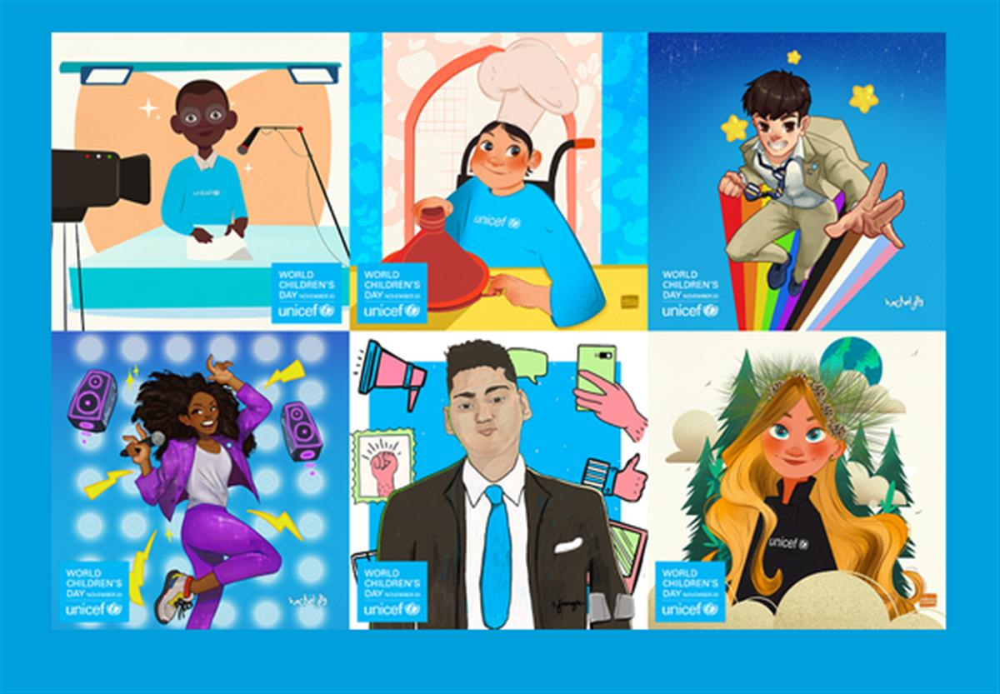

Students at the “25 de Junho” School, located in Beira, Mozambique.
Photo:UN Photo/Eskinder Debebe
World Children’s Day was first established in 1954 as Universal Children's Day and is celebrated on 20 November each year to promote international togetherness, awareness among children worldwide, and improving children's welfare.
November 20th is an important date as it is the date in 1959 when the UN General Assembly adopted the Declaration of the Rights of the Child. It is also the date in 1989 when the UN General Assembly adopted the Convention on the Rights of the Child.
Since 1990, World Children's Day also marks the anniversary of the date that the UN General Assembly adopted both the Declaration and the Convention on children's rights.
Mothers and fathers, teachers, nurses and doctors, government leaders and civil society activists, religious and community elders, corporate moguls and media professionals, as well as young people and children themselves, can play an important part in making World Children's Day relevant for their societies, communities and nations.
World Children's Day offers each of us an inspirational entry-point to advocate, promote and celebrate children's rights, translating into dialogues and actions that will build a better world for children.

2021 Theme: A Better Future for Every Child
Join the Youth Advocating for Child Rights
The COVID-19 pandemic has shown how inequality affects the rights of every child. From climate change, education and mental health, to ending racism and discrimination, children and young people are raising their voices on the issues that matter to their generation and calling for adults to create a better future.
This World Children’s Day, it’s more important than ever that the leaders listen to their ideas and demands.
Kids are reimagining a better world. What will you do? We invite you to meet this group of UNICEF Youth Advocates and other young champions who are leading with new and creative solutions to the world’s big problems and Join our TikTok challenge!
You can play your part too!
SOURCE: UNITED NATIONS